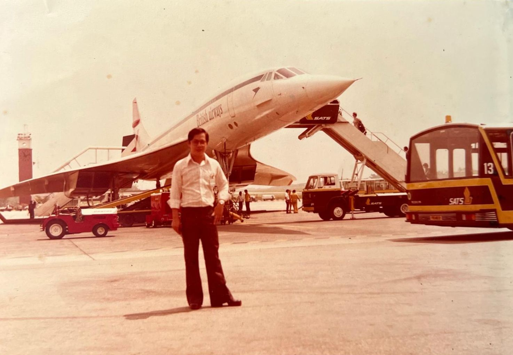

About
The story
TPH Design Studio is run by none other than Mr Teo Peng Hoe, a Heritage Building Modelist with more than 50 years of experience in the industry. Starting his journey back in 1975, he has since worked on countless projects, preserving the heritage of Singapore through his craft.
The services
Services include new builds, model integrity inspections, repairs, and restorations.
The process
The process is simple yet effective. Starting with understanding your needs and requirements, work begins by analysing and creating a model that meets your specifications. Only the best materials and techniques are used to ensure that models are of the highest quality. Further inspections are conducted to ensure that it meets your specifications, where necessary adjustments are made. Finally, the model is delivered, and in some cases, in-situ works such as repairs, restorations, touch-ups, or make-good works are provided.
The modelist
Mr Teo Peng Hoe has over 50 years of experience in the architectural model making industry. He is a master of his craft and has worked on countless projects, preserving the heritage of Singapore through his work. He is a true artist and a visionary, and his models are a testament to his skill and dedication.
